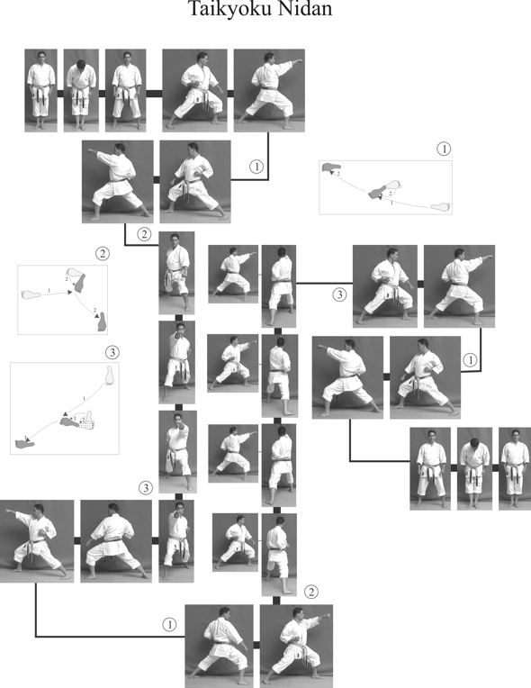

Con il passaggio alla cintura gialla, il karateka dimostra di aver compreso i fondamenti ed è pronto ad affrontare nuove sfide tecniche.
A questo livello, l’obiettivo è consolidare le basi apprese con la cintura bianca e iniziare a integrare tecniche più articolate, sia
nella coordinazione che nella comprensione delle dinamiche del combattimento. L’approccio mentale si affina, portando maggiore consapevolezza
nel controllo della respirazione, nella postura e nella gestione dell’energia.
Taikyoku Nidan

Questo kata continua l’evoluzione del Taikyoku Shodan, aggiungendo l’Age Uke come parata principale.
Rafforza il concetto di linea e di simmetria, migliorando la coordinazione tra braccia e gambe.
È utile per sviluppare la capacità di mantenere la concentrazione e la forza durante l'intera esecuzione.
Taikyoku Sandan

Il Taikyoku Sandan introduce tecniche di parata come Uchi Uke, aumentando la varietà dei movimenti.
Aiuta a rafforzare la transizione tra attacco e difesa, enfatizzando la precisione dei colpi e il ritmo.
Ideale per affinare l’equilibrio e l’allineamento del corpo.
Heian Shodan

Heian Shodan è considerato il primo kata della serie Heian. Introduce una struttura più complessa, con
cambi di direzione e combinazioni di parate e contrattacchi. Richiede maggiore padronanza delle posizioni
e un buon senso del ritmo, preparando lo studente a kata più avanzati.
Kihon Ippon
In questo stadio, il Kihon Ippon Kumite viene praticato con maggiore velocità e realismo.
Le tecniche sono eseguite con intenzione, e la distanza (maai) assume un ruolo centrale.
Si lavora sull’efficacia delle parate, sulla stabilità in posizione e sul controllo della respirazione durante il contrattacco.
Sanbon
Con la cintura gialla, il Sanbon Kumite inizia a essere praticato con maggiore fluidità.
Le tre tecniche offensive devono essere eseguite in sequenza con determinazione e ritmo continuo.
L’allievo impara a mantenere una guardia attenta e a rispondere con precisione, sviluppando il tempismo.
Gohon
Nel Gohon Kumite si lavora sulla ripetizione per rafforzare la memoria muscolare e l’automatismo.
L’enfasi è sulla corretta esecuzione delle posizioni e sull’efficacia delle parate.
È un esercizio che sviluppa disciplina, pazienza e senso del timing, elementi fondamentali nella pratica del kumite.